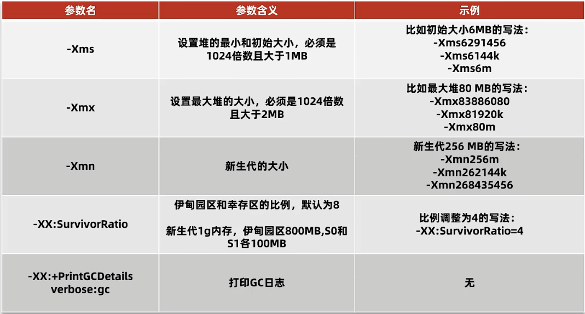
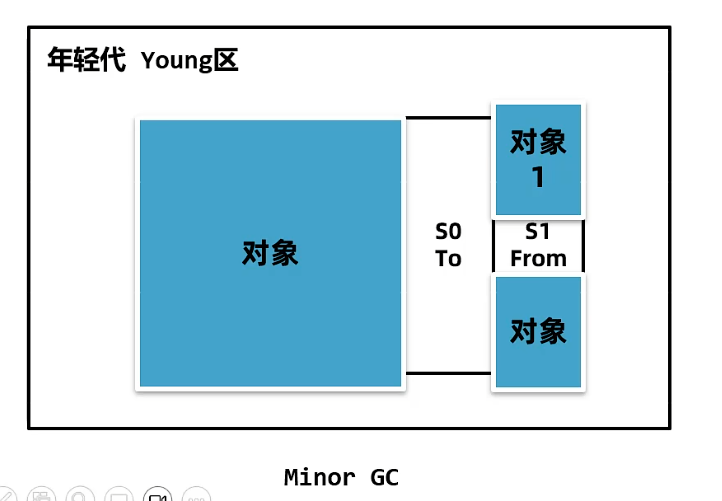
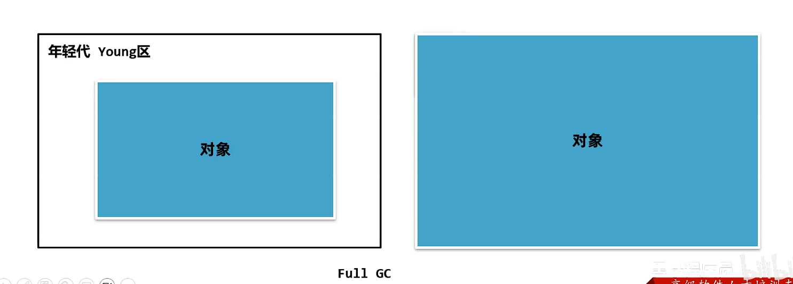

9-垃圾回收算法
垃圾回收算法
两件事：
分类
释放内存，再次利用空间
算法：
标记-清除算法
复制算法
标记-整理算法
分代GC
评判标准
都需要单独的GC线程，不管哪个算法都需要一部分停止所有用户线程。Stop The World（STW），时间不易太长
吞吐量：执行用户代码时间 / 总时间（执行用户代码+GC）
最大暂停时间：STW
堆使用效率
不可兼得
标记清除算法
两个阶段：
标记阶段：所有存活的对象进行标记。
清除阶段：删除没有被标记也就是非存活对象
优点：实现简单，只需要维护标志位
缺点：出现很多内存碎片，同时分配速度慢，需要维护空闲链表，需要遍历链表
复制算法
堆内存分成两块空间，From和To，分配内存只分配在 From 空间
GC阶段开始，把 GC Root 搬运到 To 空间
将 GC Root 关联的的对象，搬运到 To 空间
清理 From 空间，名字互换
优点：
吞吐量高，只需要遍历一次存活对象。但是不如标记清除
无碎片
缺点：
- 只能使用一半空间
标记整理算法
标记阶段，标记存活
整理：把存活对象移动到一端
优点：
内存使用效率高
无碎片
缺点：
- 整理效率不高
分代 GC
整个内存区域划分为：
年轻代（存活时间短）
Eden 区：刚创建的对象
S0（Survivor）
S1
老年代（存活时间长）
堆的大小设置

Minor GC（Eden区和 From 区，时间短，复制算法）
新创建的对象放在 Eden 区，如果 Eden 区满，那么触发年轻代 GC（Minor GC 或者 Young GC）
Minor GC 会尝试回收 eden 和 From 的对象，没有回收的放在 To 区
两个 S 区互换 To 和 From
每次存活的对象年龄加一

晋升
如果对象的年龄到达阈值（最大值15），会晋升到老年代
如果年轻代空间不够即使进行了 Minor GC，一样晋升
Full GC（整个堆，时间长）
老年代无法放入对象，先尝试 Minor GC，如果不足就尝试 Full GC
Full GC 会对整个堆进行垃圾回收
如果依然不够，那么继续放入就 Out Of Memory
